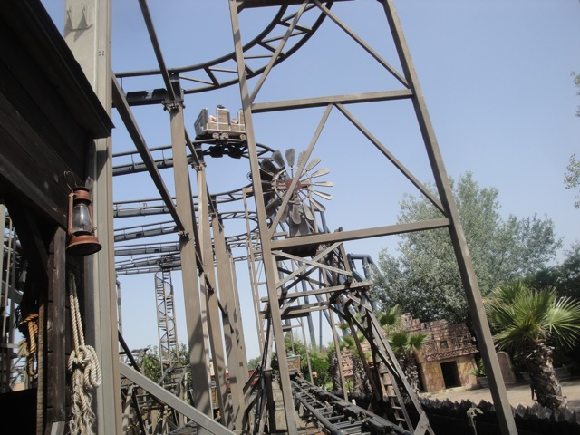
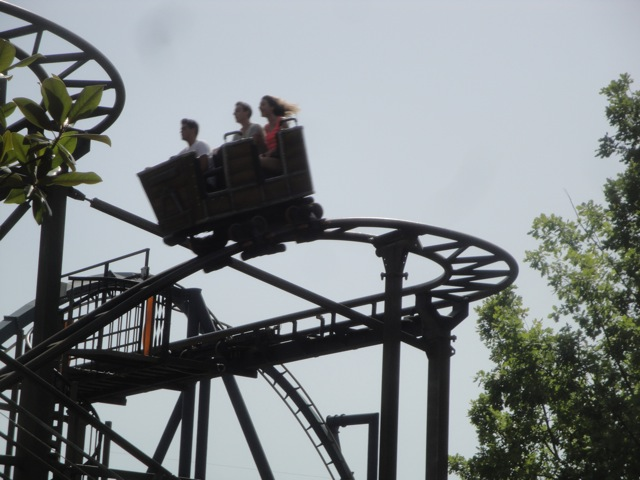
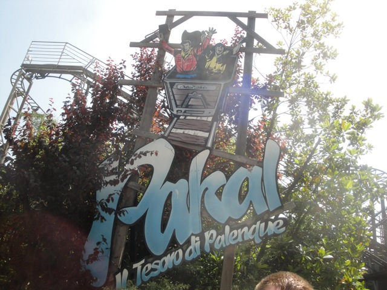

| |
Gold Digger Review

We're here at Mirabilandia, where we'll reveiwing Gold Digger. The parks Wild Mouse. After getting in the seats and pulling down the lap bar, you go up the lifthill. Up, up, and up you go. Near the top, you can get a nice shot of the switchbacks on Gold Digger as well as a nice view of Katun. Then once we get to the top, you get whipped around a turn and set into the switchbacks. The switchbacks are fun like all Wild Mouse turns. It really whips you. Then after going through the set of switchbacks, you go through some trim brakes before the big drop, but that's ok. Not only do these occur on all Wild Mouse coasters, but the brakes are barely on here, so you pretty much just fly through it. Then you turnaround only to go through the rides biggest drop. While it's not a very big drop. It's still fun. And this ride just really shoves you down. You then rise up and head around another Wild Mouse turn and SLAM!!! You really get laterals here. I know most people assume that the switchbacks are where the laterals are the strongest. And on most Wild Mice, that's correct. But on Gold Digger, things get much crazier in the second half. We then dip down, flash through a structure that gives some nice head-choppers before rising up and SLAMMING through another crazy set of Wild Mouse turns. Finally, we come across another set of trim brakes, Yeah. That's needed at this point. We then head through a typical ending hump, actually get some airtime. We then SLAM through one final Wild Mouse turn and down another dip that provides some nice airtime before slamming into the brake run. I know a lot of people really don't like this Wild Mouse because of how brutal it is. But honestly, Gold Digger is one of my favorite Wild Mouse coasters BECAUSE of how brutal it is. Seriously, aside from two stronger Wild Mouse coasters, this takes the cake. It just beats the crap out of you and is AGRESSIVE!!! And I like it that way. If you like Wild Mouse and are particuarly fond of the ultra-agressive ones, then this is the coaster for you.
7/10
Location: Mirabilandia
Opened: 1998
Built by: L&T
Last Ridden: June 20, 2012
Gold Digger Photos


Home
|